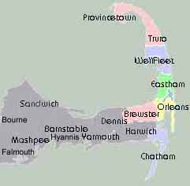
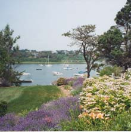

|
This site shows a selection of Anne's favorite activities and
places on Cape Cod. Things to do include walking, bicycling, boating,
sightseeing, and exploring beaches. One more favorite activity is
eating out.
Attractions are grouped by town, to make it easy to plan several
in close proximity. Circular indicators show activity types. The towns are toward the outer Cape, away from the crowds.

|

The Activities page includes pointers to additional resources.
The Tours and Organizations page introduces groups that sponsor
boat tours, hikes, and special events. The Restaurants page
features my opinions.
The Maps page shows many of the places discussed here. It suggests
a good set of paper maps and describes some special places. With
the addresses and phone numbers included here, and a good map, it
should be easy to get around. |